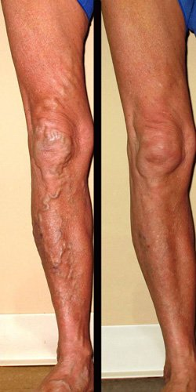

Mi sono liberata delle vene varicose per i miei nipoti
Cristina
Oggi, vi dirò come ho salvato i miei piedi dalla sofferenza atroce provocata dalle vene varicose e cosa mi ha spinto a farlo.
Come le vene varicose hanno fatto la loro comparsa nella mia vita

Fino all'età di 61 anni, non sentivo il peso dell'età. Ero contenta della mia vita, della mia splendida casa e del mio grande giardino. Non avevo bisogno di alcun aiuto, perché la mia salute mi permetteva di occuparmi della casa senza assistenza, e dato che abito da sola questo era importante. Ma, potreste chiedervi, perché mi serve tutto questo spazio? La mia gioia più grande era quando mia figlia veniva a trovarmi insieme ai miei nipotini. Quando arrivano dalla città stanchi, affamati e tormentati, adoro offrire loro dei manicaretti preparati con la frutta e la verdura del mio orto. E, ovviamente, do loro anche del cibo da portare a casa, perché oggi nei negozi si trovano solo ortaggi pieni di sostanze chimiche. I miei sono sani e naturali.

Ma poi, a 61 anni, ho iniziato a notare che le vene delle gambe stavano diventando sempre più visibili. Non molto all'inizio, ma con ogni mese che passava non solo erano sempre più evidenti attraverso la pelle, ma si stavano anche gonfiando e hanno iniziato ad avere l'aspetto di piccoli tubicini. Inoltre, anche i piedi si stavano gonfiando, mi facevano male e non riuscivo a stare in piedi.

Come le vene varicose mi hanno cambiato la vita
C'è bisogno di dire che lavorare nell'orto è diventato impossibile? Non riuscivo già più a salire al secondo piano di casa mia, ogni gradino era un incubo. Cercavo di sopportare il dolore, ma facevo fatica a coltivare i cetrioli, i pomodori e le mele per i miei nipoti.
Mia figlia mi ha chiesto di trasferirmi in città e di smettere di occuparmi dell'orto, ma mi è sempre piaciuto occuparmi della mia famiglia e mi dispiaceva troppo abbandonare la mia casa. Sarebbe stato un peccato smettere di lavorare nell'orto. Le ho detto di no. Di conseguenza, una parte degli ortaggi non è cresciuta e, dato che non avevo la forza di raccogliere la frutta e la verdura, una parte è marcita.

Mia figlia continuava a venirmi a trovare con i miei nipoti, ma ha cominciato a chiedermi di farmi ricoverare o di andare in una casa di riposo , dove avrebbero potuto occuparsi di me. Ero molto offesa! Volevo disperatamente tornare com'ero prima, quando mia figlia non mi guardava come se fossi una vecchia debole e inutile. Volevo che qualcuno avesse bisogno di me, e liberarmi di quello straziante dolore e della malattia che stava progredendo.
In cerca di un trattamento per le vene varicose
Potreste pensare che per tutto quel tempo non abbia provato a sbarazzarmi della varicosi, ma non è così. Ho cercato informazioni su internet, ho chiesto ai miei amici e ai miei parenti, ho persino provato dei rimedi popolari (ho preparato delle pomate speciali e ho applicato degli impacchi). Ho preso pillole, ho provato delle creme contro le varici, ma invano. Non mi ha aiutata niente. Nessuno di quei rimedi è riuscito ad alleviare il dolore o ridurre le vene varicose. L'unica opzione che mi era rimasta era andare dal medico, ma avevo paura perché pensavo che mi avrebbe fatta ricoverare. Purtroppo, non avevo alternative. Per amore dei miei nipoti, sono andata in ospedale.
Cosa mi ha detto il medico
Guardando le mie orribili gambe, il medico ha detto una cosa che mi ha sorpreso: "La cureremo in una settimana!" Ma se in così tanto tempo non ero riuscita a liberarmene! Lui mi ha prescritto una crema, , e mi ha dato il link del sito su cui potevo ordinarla. Mi ha spiegato che nelle farmacie si trovano solo prodotti contraffatti e che il prodotto originale e certificato si trova solo sul sito del produttore.
Per farla breve, mi ha detto che contiene solo ingredienti naturali , e per questo si assorbe in fretta, a differenza dei prodotti che contengono sostanze chimiche. Penetra nelle vene, elimina il gonfiore e restringe i vasi, che così possono tornare alla loro forma normale. Inoltre, grazie alla sua composizione naturale, è un prodotto sicuro per il corpo, anche alla mia età.
Perciò, ho subito ordinato la crema e ne ho sentito l'effetto dal primo utilizzo: rinfresca delicatamente la pelle, elimina la sensazione di dolore e rilassa le gambe. Dovevo usarla la mattina e la sera. Prima di cominciare a applicare la crema, ho scattato apposta una foto alle mie gambe, in modo da poterne verificare l'efficacia.

Il risultato
È stato semplicemente miracoloso! Dopo 10 giorni di utilizzo della crema, il dolore era scomparso completamente! Ora sono di nuovo attiva e il mio giardino ha di nuovo la sua attenta padrona!
Sono contenta di essere di nuovo la nonna che i miei figli e i miei nipoti vedono come una loro pari, non come una persona debole.
Mi prendo di nuovo cura di ciò che amo di più e passo il mio tempo con i miei cari. Ah, avete notato che le vene sono scomparse completamente? Adesso almeno le mie gambe non spaventano più i miei nipoti.

Restate in forma!
Cristina


Commenti
Alessandro
Sì, questa crema è l'unico rimedio efficace contro la varicosi. Me ne sono convinta durante la mia carriera. Lavoro in un ufficio doganale da 18 anni e stavo in piedi tutto il giorno. Io e tutti i miei colleghi abbiamo avuto bisogno di curare le vene varicose. Raccomandiamo questa crema a tutti i nuovi impiegati che cominciano a doversela vedere con questo problema. Come forse saprete, è impossibile lavorare stando tutto il giorno in piedi quando si ha male ai piedi, ma aiuta sempre.
Viola
Mi sono venute le vene varicose quando ero incinta. Non potevo rivolgermi ad un medico specialista, così ho provato a liberarmi di questa cosa terribile con qualsiasi rimedio trovassi in farmacia, ma sempre invano. Il quinto rimedio che ho provato è stato proprio la crema , su raccomandazione di mia sorella. In una settimana, le mie gambe sono tornate come prima.
Laura
Grazie per aver condiviso la tua esperienza, Cristina. Stavo giustappunto cercando un rimedio efficace contro le vene varicose, ho già ordinato la crema. Dopo quanto tempo si notano i primi risultati?
Valter Giorgi, medico chirurgo
Laura, di solito la crema allevia il dolore dal primo utilizzo e le vene cominciano a rimpicciolirsi dopo solo 3 giorni. La durata del trattamento per una guarigione completa dipende da quanto sono gonfie le vene.
Veronica
Ho ereditato le vene varicose da mia madre, che da giovane ne soffriva. Le mie vene non erano molto gonfie, ma avevo delle brutte ragnatele che trovavo molto antiestetiche. Ho ordinato e non me ne sono pentita per niente. Dopo una settimana, sono corsa al centro commerciale a comprare i vestiti che avevo sempre voluto indossare, ma che mi vergognavo a mettere a causa della varicosi.
Leonardo
Mi sono venute le vene varicose a causa del mio lavoro. Si sa che nei cantieri bisogna sollevare pesi, col rischio che le vene si gonfino. Di conseguenza, il dolore infernale ti impedisce di lavorare e devi sempre avere degli antidolorifici in tasta. Ma non si possono sempre prendere pillole! Quando sono stato assunto in un altro cantiere, i miei nuovi colleghi mi hanno detto che tutti i muratori conoscono , perché è l'unica crema che li salva. L'ho ordinata senza esitare, e in due settimane le vene non erano più gonfie e non mi facevano più male.

Angela
Si può applicare anche sulle mani per impedire che le vene si ingrossino?
Valter Giorgi, medico chirurgo
Ma certo, Angela! Consiglio a molti dei miei pazienti di usare per avere una pelle delle mani liscia.
Maria
Nel mio caso, le vene varicose sono comparse con l'età. A 53 anni, i miei piedi si sono trasformati in cose orribili e quasi non riuscivo a camminare a causa del dolore. Grazie a questa crema, sono riuscita a curare i piedi, così i miei nipoti non hanno più paura di me. Anche il dolore è scomparso e mi sento molto più leggera.
Giacomo
Posso dire che mi ha letteralmente salvato i piedi! Le vene varicose sono una malattia che ho ereditato. All'inizio, non mi dava troppo fastidio perché non indosso spesso i pantaloncini corti e non vado a spiaggia. Ma una volta le mie vene si sono gonfiate a tal punto che erano in una situazione critica. All'ospedale, il medico mi ha detto di usare urgentemente questa crema, o altrimenti mi avrebbero amputato la gamba. Dopo 3 settimane, non c'era neanche più il minimo segno di vene varicose. Amici miei, non trascurate la vostra salute, trattate i vostri problemi il prima possibile.
Valerio
Quante volte al giorno bisogna usare in caso di varicosi a stadio avanzato? La mia pelle sta già cedendo, sembra che abbia degli acini d'uva sulle gambe!
Valter Giorgi, medico chirurgo
Valerio, di solito si raccomanda di usare la crema due volte al giorno, perché si tratta di un rimedio molto potente, ma nei casi più gravi consiglio di usarlo tre volte al giorno ad intervalli regolari.
Liliana
Io non sono riuscita ad evitare le vene varicose durante la gravidanza. Il bambino pesava molto e si trattava di una gravidanza geriatrica. Le vene erano talmente gonfie che ho dovuto comprare dei vestiti di qualche taglia più grandi. E le gambe mi facevano malissimo! Nelle ultime settimane prima del parto, stavo quasi sempre seduta perché non riuscivo a camminare. La crema mi è stata regalata da mio marito, quando ancora non era disponibile in Italia. È andato in Inghilterra apposta per comprarla. Ha guarito le vene e il dolore è scomparso in meno di un mese. E l'effetto rinfrescante è davvero molto rilassante per i piedi stanchi!